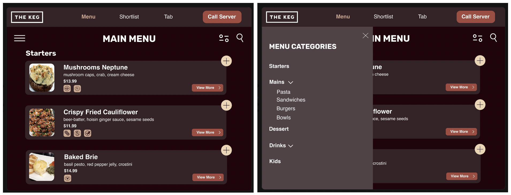
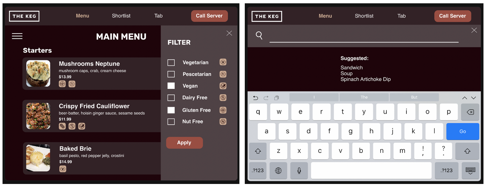
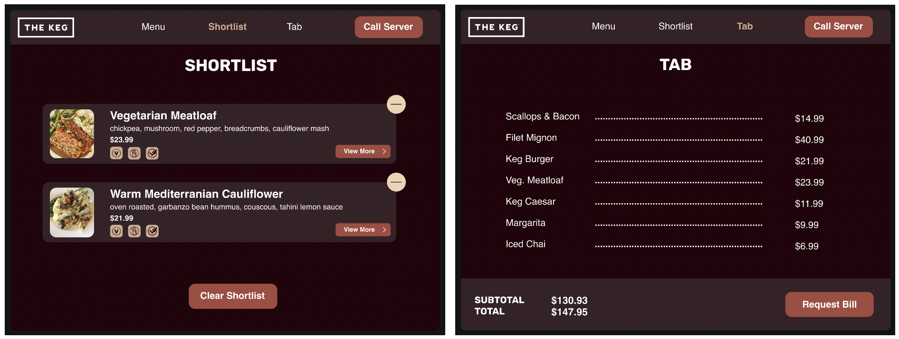

Incorporation of the mockups and the visual design elements, a prototype was developed. The first screen outlines the main menu, with the ability to scroll through each of the menu sections. Each food item displays a photo, description, dietary icons, the option to shortlist the item, and the option to view more information about the item's ingredients. The second screen shows the menu categories pop-up when the hamburger menu icon on the left is clicked. This feature allows the user to jump to categories, rather than scrolling through the entire main menu.
The third screen displays the filter pop-up, which appears when the filter icon on the right is clicked. This allows for the user to filter the menu based on their dietary preferences. The fourth screen is the search functionality, which appears when the magnifying glass icon is clicked. This page gives suggested searches, and auto-fills in options as the user types, improving decision making through user recognition over recall.
The fifth screen displays the shortlist page, which shows items that the user has decided to shortlist. The user is also able to remove items if they no longer wish to consider them in their decision making process. Finally, the sixth screen shows the running tab for the table. This allows the user to remain informed throughout the entire dining experience. As well, the user is able to request that the server bring the bill once the table is ready, to decrease the waiting times.
From the performance testing, it can be seen that all of the usability goals were met. The task completion rate exceeded the benchmark of 95%, the task completion time fell below the benchmark of 10s, and the SUS score exceeded the benchmark of 70. As well, all of the functional requirements were incorporated into the design of the final prototype.
With the creation of "Dashlight", the customer experience at sit-down restaurants can be signficantly improved.